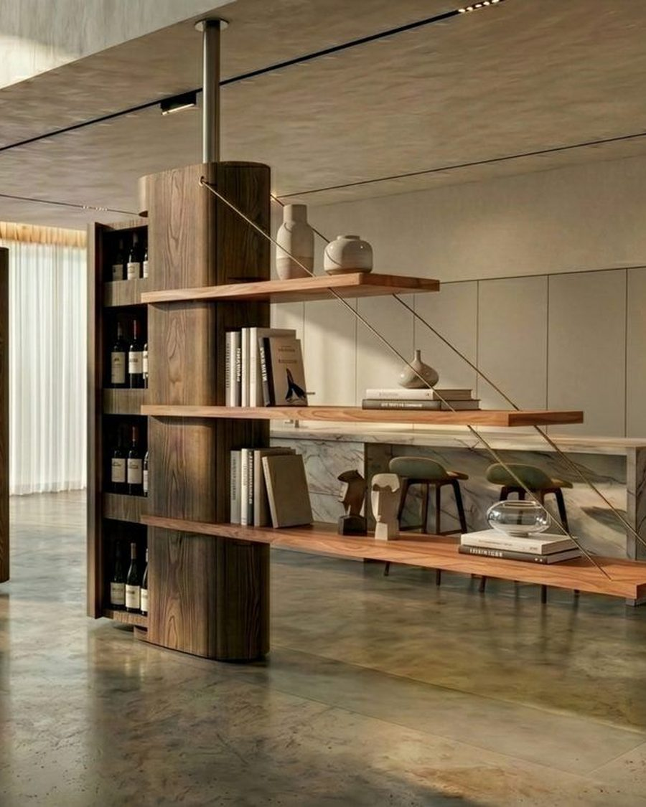
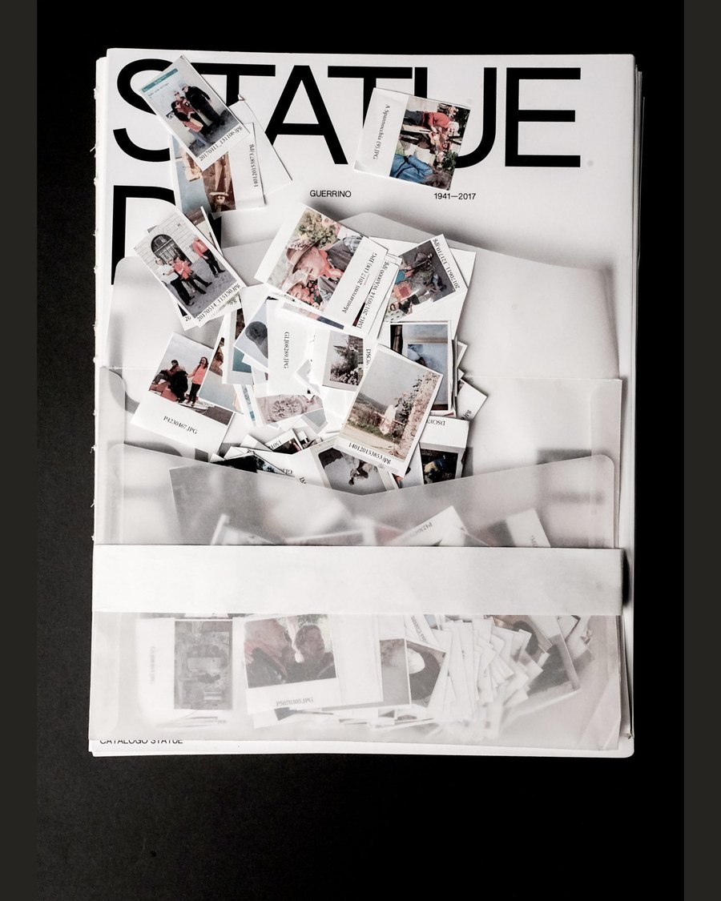
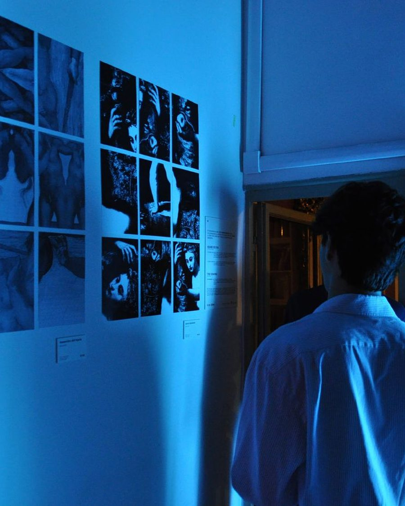

Bartolomeo
Lodi-Fè

Product2026
FoliaA family of devices that monitors aromatic plants. It turns the plant’s health into three emotions you can read at a glance.
Product Design II, mid-year examOpen the project →
Folia
Product2026

Product2026
TrabuccoA wooden cabinet whose shelves hang from nautical cables stretched from a pole, like the fishing machines it is named after.
Product Design II, Ideas for Wood competitionOpen the project →
Trabucco
Product2026

Communication2026
Trattato del ribelle/GuerrinoJünger’s The Forest Passage reread through Guerrino and the Bagnaia commune, with a catalogue of his statues.
Visual Communication II examExhibited at the International Graphic Design Biennale, Milan 2026Open the project →
Trattato del ribelle/Guerrino
Communication2026

Basic Design2025
MatriceA single module, a slab and a cube drawn on a 9×9 grid, repeated and combined: from matrix to system, from system to volume.
Prof. Massimo Ciafrei, ISIA Roma DesignOpen the project →
Matrice
Basic Design2025

Communication2026
Exhibition routeAn exhibition route presenting projects by students of IED Roma and ISIA Roma Design, centred on giving back cultural heritage.
Personal project, with Ludovico Genone and Prisca BonfiniOpen the project →
Exhibition route
Communication2026

Communication2026
Il Bazar del CashmereVisual identity for a travelling cashmere market.
Visual identity for Sabrina De MauroOpen the project →
Il Bazar del Cashmere
Communication2026

Communication2025
Via di FugaMy editorial project: a fanzine about the weight of being looked at, conceived during the Fritto Misto exercise and shown in the exhibition that grew out of it.
Fritto Misto exercise, Visual Communication IIOpen the project →
Via di Fuga
Communication2025
07 projectsDrag or scroll